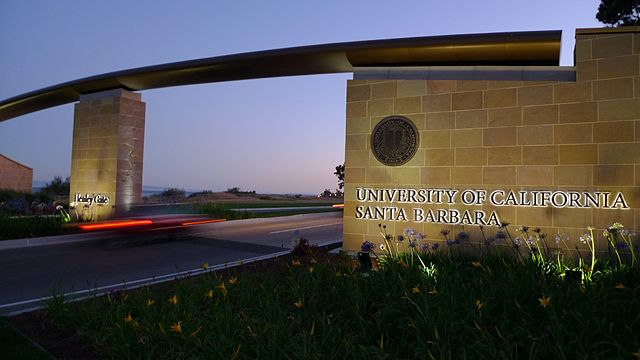

A static page for Project0
Hello, I am Ishtiyaque Ahmad, a first year PhD student in the deartment of Computer Sciecne, UCSB. This static page was created as a requirement of Project0 under course CS 291 supervised by Bryce Boe. The github repo of this
webpage can be found here.
I have taken following courses for this quarter (Fall 19):
| Course Number |
Course Name |
| CS 235 |
Computational Geometry |
| CS 291 |
Scalable Internet Services |
Reasons I am excited about CS 291....
- Will get to learn about web development, which I am a newbie in
- Will get to learn about scaling, security, and other cool stuffs
- Attending Bryce's class is really fun :)
I will be doing following projects over the next five weeks:
- Static Web Page
- AWS Lambda
- Google’s Cloud Run
- React and GraphQL
Besides these, there will also be a Primary Project for this course.
Let me finish this page with an image of the beautiful Henley Gate at UCSB

*Image source: commons.wikimidea.org